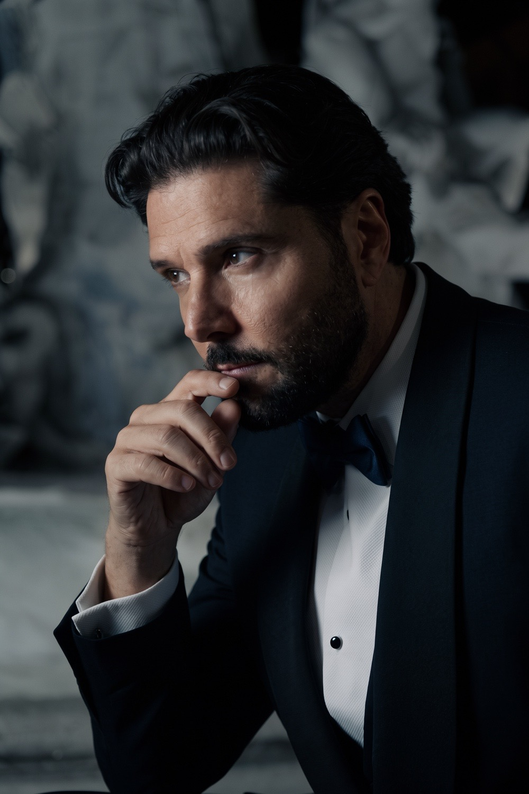
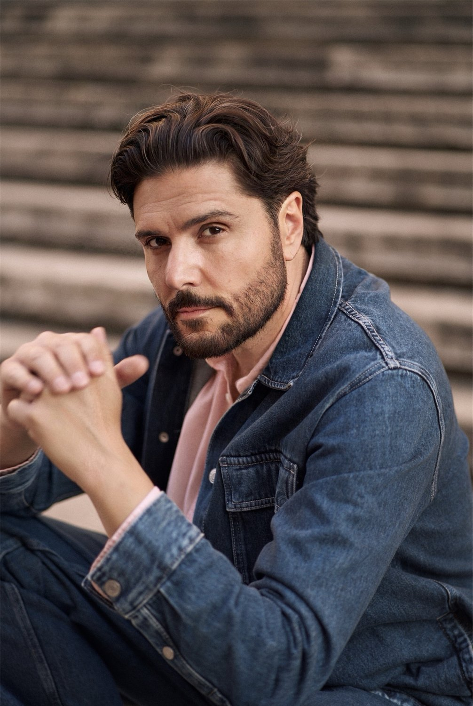
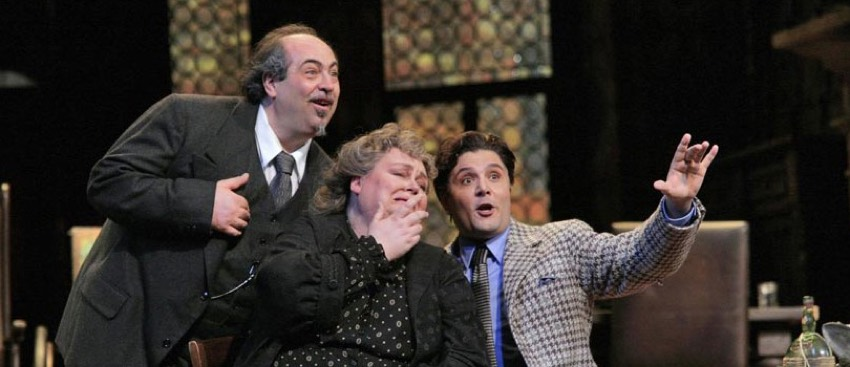

Biografia
Massimo Giordano
Tenore italiano, una carriera che tiene quasi trent’anni: dai grandi teatri d’Europa e d’America a un secondo atto come direttore artistico del Minthis Music Festival e Professore di canto al Conservatorio di Cagliari.

Biografia corta, circa 60 parole
Massimo Giordano è un tenore italiano. In quasi trent’anni ha cantato i grandi ruoli del repertorio lirico al Metropolitan, alla Scala, alla Staatsoper di Vienna, al Covent Garden, all’Opéra di Parigi e alla Bayerische Staatsoper, con direttori come Abbado, Chailly, Maazel, Rattle, Mehta e Pappano. È direttore artistico del Minthis Music Festival a Cipro e Professore di Conservatorio, cattedra di canto al Conservatorio “Giovanni Pierluigi da Palestrina” di Cagliari.
Biografia media, circa 250 parole
Nato a Pompei e cresciuto a Trieste, Massimo Giordano è cresciuto dentro il Conservatorio Giuseppe Tartini, dove il padre faceva il custode. Lì studia flauto e si diploma nel 1989, poi scopre la voce pochi giorni prima del saggio finale, e a diciotto anni passa alla classe di canto del soprano Cecilia Fusco. Continuerà a lavorare per molti anni con Aldo Danieli, maestro del coro alla Fenice.
Dal 1992 al 1995 canta nel coro del Teatro Verdi di Trieste. Nel 1997 vince il concorso “Adriano Belli” del Teatro Lirico Sperimentale di Spoleto, quello da cui sono passati Corelli, Bastianini, Moffo, Raimondi, Bruson e Devia e debutta nel ruolo del titolo nella Clemenza di Tito di Mozart.
Due debutti del 2001 cambiano la traiettoria: la Scala, in Un giorno di regno di Verdi, e il Festival di Salisburgo come Fenton nel Falstaff, scritturato da Claudio Abbado con i Berliner Philharmoniker e diretto infine da Lorin Maazel nell’allestimento di Declan Donnellan. Seguono Madrid, Dresda, Glyndebourne, la Carnegie Hall e, nel 2006, il debutto al Metropolitan come Des Grieux nella Manon di Massenet accanto a Renée Fleming.
La voce cresce verso i ruoli lirici più pieni: Cavaradossi, Don Carlo, Don José, Andrea Chénier, Maurizio, Des Grieux nella Manon Lescaut diretta da Sir Simon Rattle. Il primo disco, Amore e Tormento, esce per BMG nel 2013.
Oggi divide il lavoro fra il palcoscenico, il Minthis Music Festival a Cipro, che ha fondato e di cui è direttore artistico e la cattedra di canto al Conservatorio di Cagliari.

Biografia completa
La versione lunga
Trieste, e un conservatorio per casa
Giordano nasce a Pompei, in una famiglia operaia senza musicisti di professione, ma con un padre che cantava, e un modo napoletano di sentire la canzone che gli è rimasto addosso. Nel 1977 la famiglia si sposta da Boscoreale a Trieste, dove il padre ottiene un posto come custode al Conservatorio Giuseppe Tartini. Nelle sue parole è stata una vera svolta del destino: è cresciuto dentro un conservatorio, con la musica al centro della giornata molto prima di pensarsi cantante.
Lì studia prima flauto, con Giorgio Marcossi, e si diploma con Daniele Ruggeri nel 1989. Quegli anni passati dentro la struttura musicale, il fraseggio, il colore dell’orchestra sono quello a cui ha sempre attribuito il suo modo di affrontare il canto: pensare come un musicista dentro l’orchestra, non solo come un solista davanti.
La voce arriva quasi per caso. Pochi giorni prima del saggio di diploma, un amico pianista cieco gli chiede di cantare insieme una canzone napoletana; il padre, che aveva una bella voce di tenore leggero, gli aveva sempre detto che anche il figlio cantava. L’amico lo ferma a metà frase: cosa ci fai con quel flauto, devi studiare canto. A diciotto anni, alla vigilia del diploma strumentale, Giordano cambia strada e comincia a studiare con il soprano Cecilia Fusco, che costruisce le fondamenta tecniche, il fiato, il legato, la chiarezza della parola, che gli sono rimaste. Poi lavora per molti anni con Aldo Danieli, specialista di tecnica vocale e per quasi tutta la carriera maestro del coro al Teatro La Fenice di Venezia, fino alla morte di Danieli, a Trieste, nel settembre 2021.
Gli anni italiani, 1992–2000
Prima di qualunque debutto da solista canta nel coro del Teatro Verdi di Trieste, dal 1992 al 1995: tre anni dentro produzioni vere, anni prima del proprio debutto. La svolta arriva nel 1997, con il concorso “Adriano Belli” del Teatro Lirico Sperimentale di Spoleto, che gli porta il debutto nel ruolo del titolo nella Clemenza di Tito al Teatro Caio Melisso. Seguono subito scritture in tutta Italia: Alfredo nella Traviata e un primo Werther a Spoleto, Ernesto nel Don Pasquale al Verdi di Trieste, Roméo accanto a Mariella Devia al Regio di Parma, e il Werther che nel 1998 si impone davvero al Teatro Valli di Reggio Emilia.
Nel 2000 canta Jean nel Jongleur de Notre-Dame di Massenet al Teatro dell’Opera di Roma diretto da Gianluigi Gelmetti, inaugurando la stagione del Grande Giubileo, una recita poi pubblicata dal vivo. Recensendola sul Corriere della Sera, Paolo Isotta lo indica come una scoperta vera: un attore eccezionale, bel timbro, disciplina vocale e dizione chiara, tanto più notevoli data la durezza fisica di quella regia.
La svolta internazionale, 2001
Due debutti in un anno solo cambiano tutto. Il 6 settembre 2001 debutta alla Scala come Edoardo di Sanval in Un giorno di regno di Verdi, dentro il Progetto Giovani del teatro, diretto da Corrado Rovaris con scene e costumi di Pier Luigi Pizzi. Nello stesso anno il Festival di Salisburgo: Fenton nel Falstaff verdiano, scritturato da Claudio Abbado con i Berliner Philharmoniker, con le recite dirette infine da Lorin Maazel nell’allestimento di Declan Donnellan.
Il debutto al Teatro Real arriva nel 2002 come Duca di Mantova nel Rigoletto, quello alla Semperoper di Dresda alla fine del 2003 come Rodolfo nella Bohème; Zurigo e Tolosa verranno più tardi. Nel 2004 canta Rinuccio in Gianni Schicchi a Glyndebourne con Vladimir Jurowski, produzione poi uscita in DVD. Il 7 aprile 2005 debutta a New York, non al Met ma alla Carnegie Hall, come Wilhelm Meister in una Mignon di Thomas in forma di concerto con la Opera Orchestra of New York diretta da Eve Queler. Il debutto scenico al Metropolitan è del 5 aprile 2006, come Des Grieux nella Manon di Massenet accanto a Renée Fleming, trasmesso in tutto il mondo tre giorni dopo.
Due decenni sui grandi palcoscenici
Da lì entra in rotazione stabile al Royal Opera House Covent Garden, all’Opéra national de Paris, alla Staatsoper di Vienna, alla Bayerische Staatsoper, alla Deutsche Oper Berlin, alla Staatsoper Unter den Linden, alla Lyric Opera di Chicago e alla Los Angeles Opera, continuando a lavorare a Roma, Napoli, Venezia e Parma.
Il suo Rodolfo si ascolta a Parigi, Monaco, Vienna, Londra, Berlino, New York e Los Angeles; il suo Alfredo al Met, a Monaco, Berlino, Mosca, Parma, Trieste, alla Scala con Lorin Maazel, a Los Angeles e alla Santa Fe Opera, il suo debutto scenico americano. Il suo Roméo arriva a Monaco, Francoforte, Chicago e Pittsburgh.
Alla fine degli anni Duemila la voce si sposta su un terreno più pieno e drammatico. Don José lo porta a Berlino, Vienna e Zurigo. Cavaradossi, debuttato alla Dallas Opera nel 2008, diventa il suo ruolo più ricorrente, e lo accompagna a Monaco, Vienna, Roma, Dresda, Stoccarda, San Francisco, Londra, New York, al Bol’šoj e in più di una dozzina di altri teatri lungo vent’anni. Canta il ruolo del titolo nel Don Carlo verdiano a Berlino, Amsterdam e al Maggio Musicale Fiorentino con Zubin Mehta, e nell’autunno 2019 affronta per la prima volta la rara versione francese, in un nuovo allestimento di Stoccarda. Nel febbraio 2015 canta il ruolo del titolo in Andrea Chénier alla Staatsoper di Vienna, con Marco Armiliato sul podio e la regia di Otto Schenk.
Altri debutti di quegli anni: Gabriele Adorno nel Simon Boccanegra ad Amburgo; Foresto nell’Attila alla Deutsche Oper Berlin, poi a Lione e a Parigi; Maurizio in una nuova Adriana Lecouvreur a Vienna. L’impegno forse più esigente è Des Grieux nella Manon Lescaut di Puccini, al Festival di Pasqua di Baden-Baden e a Berlino con i Berliner Philharmoniker diretti da Sir Simon Rattle, regia di Richard Eyre, accanto a Eva-Maria Westbroek, ruolo che riprenderà al Covent Garden con Sir Antonio Pappano.
Pochi ruoli gli sono rimasti addosso come Werther, da quella prima recita di Spoleto del 1997 a Monaco nel 2010 accanto a Vesselina Kasarova, e poi Berlino, Zurigo, Tolosa e l’Opéra national du Rhin di Strasburgo.


Concerto, musica sacra, disco
Ha cantato più volte il Requiem di Verdi in tutta Europa con Riccardo Chailly, e a Roma nel 2005 con Gianluigi Gelmetti in memoria di Giovanni Paolo II. Il 31 dicembre 2000 è solista nel concerto di fine anno dei Berliner Philharmoniker, un gala verdiano diretto da Claudio Abbado, pubblicato come Gala from Berlin 2000 · Tutto nel mondo. Il 31 dicembre 2015 torna al Silvesterkonzert del Festspielhaus di Baden-Baden con Angel Blue ed Erwin Schrott, diretto da Gérard Korsten, in diretta su arte e SWR.
Ha cantato al Concertgebouw di Amsterdam, alla Philharmonie di Berlino, al Musikverein di Vienna, la Messa di Gloria di Puccini, sulla Piazza del Palazzo d’Inverno a San Pietroburgo, e in recital all’Auditorium Franco Zeffirelli di Firenze con la pianista Adele Aronzo.
Il 29 ottobre 2012 firma un contratto in esclusiva con BMG Rights Management. Il primo disco da solista, Amore e Tormento, è registrato a Firenze con l’Ensemble del Maggio Musicale Fiorentino diretto da Carlo Goldstein ed esce il 6 maggio 2013: attraversa le grandi romanze italiane del verismo e del tardo Ottocento accanto a qualche pagina dimenticata. Il videoclip, per «Marcella», è girato a Napoli e lungo la Costiera Amalfitana, diretto da Marisa Crawford.
Il secondo atto: festival, produzione, insegnamento
La prima impresa da direttore artistico è The Encore Classical Music Festival di Marbella, in Spagna, dal 2022 al 2023. La serata inaugurale, il 20 luglio 2022 alla Marbella Arena, porta Zubin Mehta a dirigere Orchestra e Coro del Maggio Musicale Fiorentino nella Nona di Beethoven, la prova che trent’anni di rapporti nel mondo orchestrale si possono convertire in capacità produttiva.
Dal 2024 è direttore artistico del Minthis Music Festival, nell’anfiteatro all’aperto del resort Minthis, sulle colline sopra Pafos a Cipro, presentato da Pafilia. Nato come una serie intima di due serate, nel 2025 diventa un festival di cinque notti, il debutto cipriota del Quartetto d’archi della Scala, Pablo Sáinz-Villegas, Rachel Portman, Niklas Liepe, Raphaela Gromes e torna nel luglio 2026 con Florian Christl, Jeneba Kanneh-Mason, il Vision String Quartet, Günther Groissböck e Claire Martin. La quarta edizione è confermata per il 2027.
Accanto a questo tiene la cattedra di canto al Conservatorio Statale di Musica “Giovanni Pierluigi da Palestrina” di Cagliari, una cattedra vera in un’istituzione statale, due giorni di lezione a settimana, arrivando da Trieste. Interprete, produttore e Professore di Conservatorio: tre strade che si alimentano a vicenda, costruite sugli stessi trent’anni.
Cronologia
Anno per anno
Ricostruita da materiali biografici ufficiali, archivi dei teatri, rassegna stampa e schede Operabase.
- 1989Diploma di flauto, Conservatorio “G. Tartini”, Trieste. Comincia a studiare canto con Cecilia Fusco; poi, per molti anni, con Aldo Danieli.
- 1992–95Coro del Teatro Verdi, Trieste.
- 1997Vince il concorso “Adriano Belli”, Spoleto. Debutto nel ruolo del titolo nella Clemenza di Tito, Teatro Caio Melisso. Nello stesso anno Alfredo (La traviata) e un primo Werther a Spoleto; Ernesto (Don Pasquale), Teatro Verdi, Trieste.
- 1998Werther al Teatro Valli di Reggio Emilia: è lì che il ruolo si impone.
- 1999Rossini Opera Festival, Pesaro (Adina); Il Principe Alexis in Siberia di Umberto Giordano, Wexford Festival Opera; Roméo accanto a Mariella Devia, Teatro Regio di Parma.
- 2000Jean, Le Jongleur de Notre-Dame, Teatro dell’Opera di Roma, Gelmetti, apertura della stagione del Grande Giubileo. 31 dicembre: solista nel concerto di fine anno dei Berliner Philharmoniker con Claudio Abbado.
- 2001Debutto alla Scala, 21 settembre, Un giorno di regno. Debutto a Salisburgo come Fenton nel Falstaff di Donnellan: in aprile al Festival di Pasqua con Claudio Abbado e i Berliner Philharmoniker, in estate al Festival di Salisburgo con Lorin Maazel. Ruggero, La rondine, Roma; il Duca, Rigoletto, Arena di Verona e Teatro Real di Madrid; Oronte, I Lombardi, Cremona · Como · Pavia · Bergamo.
- 2002Rinuccio, Gianni Schicchi, Roma; Ernesto, La Fenice, Venezia; Alfredo, The Santa Fe Opera, debutto scenico americano; La traviata, Tokyo; Don Ottavio, Teatro di San Carlo, Napoli.
- 2003Rodolfo, Teatro dell’Opera di Roma, regia di Franco Zeffirelli. Debutto alla Staatsoper di Vienna come Nemorino. Debutto alla Semperoper di Dresda come Rodolfo.
- 2004La traviata, Deutsche Oper Berlin. Rinuccio, Festival di Glyndebourne con Vladimir Jurowski, e una recita ai BBC Proms. Requiem di Verdi, Oper Leipzig, Riccardo Chailly. Roméo, Oper Frankfurt.
- 20057 aprile: debutto newyorkese come Wilhelm Meister in Mignon in forma di concerto, Carnegie Hall, Eve Queler. Don Ottavio, Teatro Regio di Torino. Rodolfo, Staatsoper Unter den Linden.
- 20065 aprile: debutto scenico al Metropolitan come Des Grieux in Manon accanto a Renée Fleming; diretta mondiale l’8 aprile. Des Grieux alla Scala con Ion Marin. Roméo, Pittsburgh Opera e Lyric Opera di Chicago. Rodolfo, Bayerische Staatsoper.
- 2007Ruggero, Dallas Opera. Rinuccio, Il Trittico, Metropolitan, James Levine. Faust, La Damnation de Faust, Welsh National Opera. La traviata, Scala, Lorin Maazel. Rodolfo, LA Opera.
- 2008Des Grieux accanto ad Anna Netrebko, Staatsoper di Vienna. Werther, Bayerische Staatsoper. Debutto in Tosca, Dallas Opera. Lenskij, Evgenij Onegin, Glyndebourne, Jurowski / Vick. La traviata e La bohème al Met, allestimenti di Zeffirelli.
- 2009Don José, debutto alla Deutsche Oper Berlin. 31 marzo: Nemorino accanto ad Angela Gheorghiu, Metropolitan. Macduff, Macbeth, Edinburgh International Festival. 1 ottobre: concerto con Anna Netrebko, Salle Pleyel, Parigi. Rodolfo, Opéra national de Paris.
- 2010Don José, Staatsoper di Vienna, allestimento di Zeffirelli con Andris Nelsons, Anna Netrebko come Micaëla e Ildebrando D’Arcangelo come Escamillo; ripreso da Unitel. Des Grieux, Teatro dell’Opera di Roma. Werther, Bayerische Staatsoper, accanto a Vesselina Kasarova.
- 2011Don José, Monaco (regia di Lina Wertmüller) e debutto all’Opernhaus di Zurigo. Roméo, Staatsoper di Vienna. Tosca, Opéra national de Paris e Festival di Savonlinna. Don Carlo, Deutsche Oper Berlin.
- 2012Pollione, Norma, Nizza e Parigi. Don José, Zurigo, fra i direttori Plácido Domingo. Tosca: Monaco, Zurigo (Fabio Luisi), debutto alla San Francisco Opera.
- 2013Tosca alla Deutsche Oper Berlin, a Bilbao, al Royal Opera House di Londra, alla Bayerische Staatsoper (Kirill Petrenko). Don Carlo, Maggio Musicale Fiorentino, Zubin Mehta, regia di Luca Ronconi. 6 maggio: esce Amore e Tormento. Foresto, Attila, Deutsche Oper Berlin. 3 settembre: inaugura la stagione della Staatsoper di Vienna come Alfredo.
- 2014Maurizio, Adriana Lecouvreur, Staatsoper di Vienna. Des Grieux, Manon Lescaut, Festival di Pasqua di Baden-Baden con Sir Simon Rattle, e recite in concerto con i Berliner Philharmoniker. Pollione, Vienna. Tosca, Opéra national de Paris, regia di Pierre Audi.
- 2015Febbraio: ruolo del titolo in Andrea Chénier, Staatsoper di Vienna, Marco Armiliato / Otto Schenk. Tosca, Metropolitan. Manon Lescaut, Deutsche Oper Berlin. 31 dicembre: Silvesterkonzert, Festspielhaus Baden-Baden, con Angel Blue ed Erwin Schrott.
- 2016La traviata, Hamburgische Staatsoper. Don Carlo, El Escorial. Manon Lescaut, Hannover e Royal Opera House di Londra con Sir Antonio Pappano. Tosca, Seul. Concerto a Firenze con Zubin Mehta.
- 2017Don José, New National Theatre di Tokyo. Tosca, Amburgo e Trieste. Maurizio, Karlsruhe. Manon Lescaut, Auckland. Foresto, Opéra de Lyon e Théâtre des Champs-Élysées. Gabriele Adorno, debutto alla Hamburgische Staatsoper.
- 2018Tosca, Royal Opera House di Londra, Teatro dell’Opera di Roma, Deutsche Oper Berlin, Stoccarda. Werther, Opéra national du Rhin, Strasburgo. Ismaele, Nabucco, Lione e Parigi.
- 2019Tosca, Varsavia e Seul. La traviata, Staatsoper Unter den Linden. Pollione, Stoccarda. Ottobre: prima volta nella versione francese del Don Carlos, nuovo allestimento di Stoccarda.
- 2020–21Tosca, Staatsoper di Vienna e Teatro Bol’šoj, Mosca. Ismaele, Nabucco, Staatsoper di Vienna. 19 settembre 2021: muore a Trieste Aldo Danieli, il suo maestro di sempre.
- 202219 aprile: concerto di beneficenza “Help for Ukraine”, Klagenfurt. 20 luglio: inaugura da direttore artistico The Encore Classical Music Festival di Marbella, con Zubin Mehta e la Nona di Beethoven.
- 2023Seconda e ultima edizione di Marbella. 14 febbraio: recital con la pianista Adele Aronzo, Auditorium Franco Zeffirelli, Firenze.
- 2024Prima edizione del Minthis Music Festival, Pafos, Cipro.
- 2025Anno accademico 2025/2026: cattedra di canto al Conservatorio “Giovanni Pierluigi da Palestrina” di Cagliari. 9–13 luglio: seconda edizione del Minthis Music Festival, cinque serate, Quartetto d’archi della Scala (debutto a Cipro), Pablo Sáinz-Villegas, Rachel Portman, Niklas Liepe, Raphaela Gromes.
- 20268–12 luglio: terza edizione del Minthis Music Festival, Florian Christl, Jeneba Kanneh-Mason, Vision String Quartet, Günther Groissböck, Claire Martin. 17 settembre: recital Parlami d’Amore, Laeiszhalle, Amburgo. 19 settembre: Opera Night Under the Stars, Teatro antico di Kourion, Cipro.
- 2027Quarta edizione del Minthis Music Festival, confermata; date da annunciare.